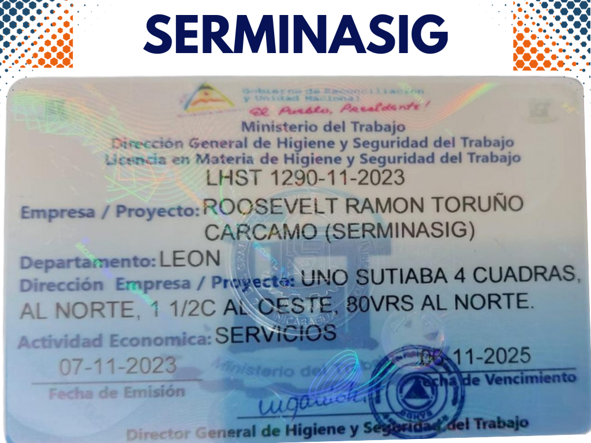

Licencia de Higiene y Seguridad SERMINASIG 2023-2025
En Serminasig, nos enorgullece contar con la Licencia de Higiene y Seguridad para el periodo 2023-2025. Esta licencia refleja nuestro compromiso inquebrantable con los más altos estándares de seguridad y calidad en todos los servicios que ofrecemos.
